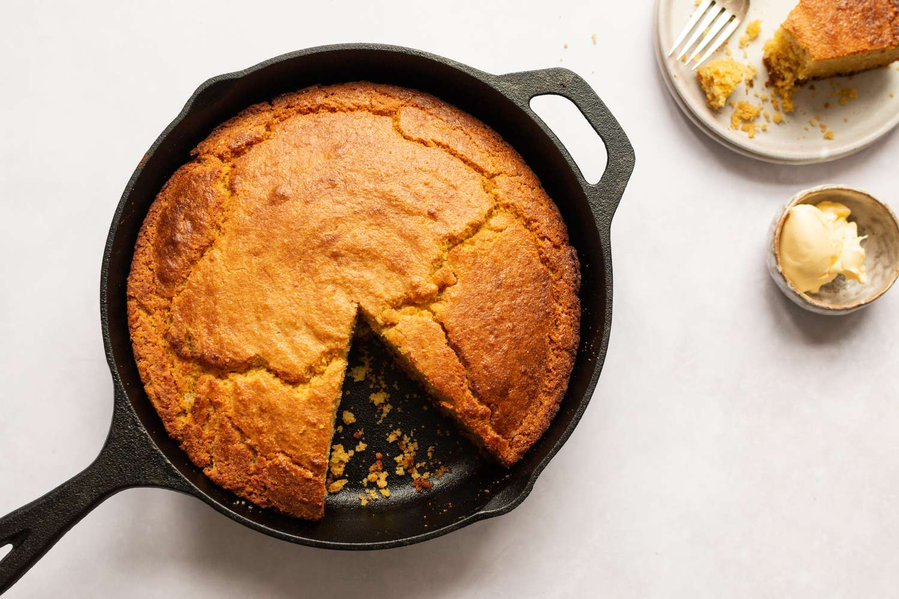

Cornbread

What is SOuthern Style Cornbread?
Cornbread is a staple in the South. It is absolutely essential with bean dishes, black-eyed peas, greens, hearty stews, and, of course, country-style ribs.
It's a cheap, filling dish that's easy to make from scratch and better than any boxed mix. Throughout the years, Southerners have enjoyed cornbread in many
different ways, from fritters to corn pone and spoon bread to hush puppies. Despite all of those options, many believe that the best Southern cornbread is baked in a cast-iron pan so it gets a crispy crust.
Ingredients
- 1 tablespoon vegetable shortening
- 2 cups yellow cornmeal
- 1 1/2 cups (or180 grams) all-purpose flour
- 2 teaspoons kosher salt
- 2 teaspoons baking powder
- 1 teaspoon baking soda
- 2 tablespoons granulated sugar
- 3 large eggs, beaten
- 2 cups milk
- 1/4 cup (or 2 ounces) unsalted butter
How to make Southern Style Cornbread
- Gather the ingredients. Preheat oven to 425 F.
- Put the shortening in a 10-inch cast-iron skillet and place in the oven to preheat while making the batter.
- In a mixing bowl, combine the cornmeal, flour, salt, baking powder, baking soda, and sugar.
- In another bowl, whisk together the eggs, milk, and butter.
- Combine with dry ingredients and stir until all ingredients are moistened. The batter will be similar to a thick pancake batter.
- Carefully, with heavy oven mitts, lift the skillet out of the oven and turn to coat the bottom and sides with the melted shortening.
- Pour the cornbread batter into the skillet and return it to the oven.
- Bake for about 20 to 25 minutes, until browned. A toothpick inserted in the center should come out clean. Serve and enjoy.